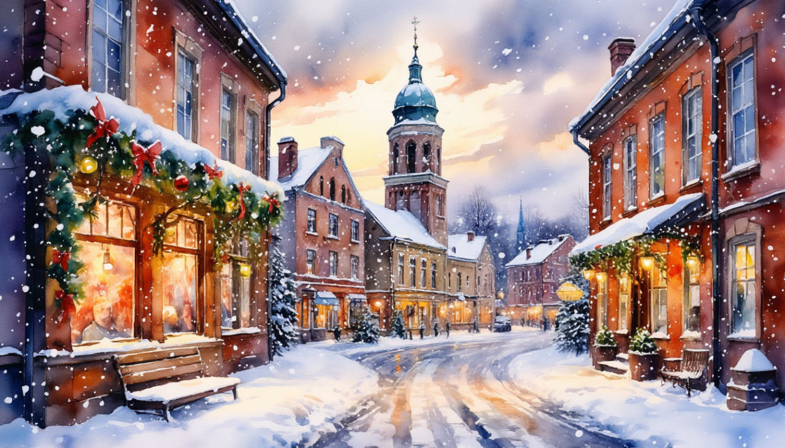

Три короны: новогоднее путешествие в Русскую Швецию + Петербург

Даты тура: с 30 декабря 2025 года (вт) по 3 января 2026 года (сб)
Стоимость тура:
- 32 800 р. - взрослый
- 32 400 р. - пенсионеры/школьники
- под запрос - одноместное размещение
Программа тура:
1 день: Отправление
- 14-30- выезд из Костромы от ТРЦ "РИО" (ул. Магистральная, 20), правый угол от центрального входа. Ночной переезд
2 день: Средневековый Выборг
- Прибытие в Выборг.
- Завтрак в кафе города.
- Обзорная экскурсия по Выборгу — когда-то одному из 5 самых крупных городов Шведского королевства. Исторический центр Выборга многие специалисты считают самым сохранившимся средневековым шведским городом — значительно лучше Хельсинки, Порвоо и даже чем Турку.
- Помимо знаменитого замка Выборг может похвастаться многочисленными памятниками средневековой (и не только!) архитектуры: ганзейские дома — самые старые в России, уникальный дом на скале (дом парикмахера), Рыцарский дом (костёл святого Гиацинта), Часовая и Круглая башни, бастион Панцерлакс — остатки Рогатой крепости, площадь Красного колодца и угол 5 балконов, памятник основателю города — шведскому наместнику Торгильсу Кнутссону, дома северного модерна — гранитный дворец, банк Финляндия и многое другое.
- Посещение территории Выборгского замка — старинного «островка» Средневековья и визитной карточки города, с которой началась его история. Прогулка по его мощёным улочкам среди величественных стен переносит в атмосферу рыцарских романов. Привлекает и то, что Выборгский замок является одним из немногих памятников западноевропейского военного зодчества в Российской Федерации. Башня Святого Олафа, которая в Средние века была самым высоким донжоном Скандинавии, возвышается над водами залива.
- Обед в кафе города.
- Главные атрибуты рождественской ярмарки в Выборге — стилизованные под средневековые штучки сувениры, горячий глинтвейн и, конечно, выборгские крендели!
- Предлагаем вместе с нами отправиться на мастер-класс по приготовлению этих самых кренделей! В программе мастер-класса: встреча с хозяйкой Хельгой, костюмированная лекция об истории кренделя, рассказ о рецепте, приготовление кренделей (каждому гостю предоставляется отдельная заготовка), выпечка и, конечно, долгожданная дегустация!
- Новогодние праздники — это всегда время вкусных чудес, когда пряные ароматы овевают гостиные и наполняют дома уютом. В эти радостные дни можно почувствовать волшебство приближающегося Праздника. Гости этого мастер-класса соберутся у Рождественского венка, освещённого 4 свечами — свечами Надежды, Мира, Любви и Радости! Узнают, как отмечали Новый Год в Выборге в разные времена, загадают желание вместе с гномами Тоннту, прикоснутся к секретам местных пекарей. Каждый гость научится печь знаменитый Выборгский крендель, который славится на всю Россию и является символом старинного города. Пока кренделёк будет в печи, гости смогут согреться пряным хмельным глинтвейном или какао у Рождественской ели во внутреннем дворике.
- Свободное время в Выборге, которое можно посвятить многочисленным музеям города, неспешным прогулкам по парку Монрепо и рождественским ярмаркам!
- Сбор группы.
- Переезд в Санкт-Петербург (Выборг → Санкт-Петербург: 145 км).
- Размещение в отеле.
- Вечером — участие в новогоднем банкете (по желанию и за доп. плату)*. Меню и программа банкета будут опубликованы позднее.
3 день: Волшебство Нового года
- Завтрак.
- Во второй половине дня — свободное время
- ИЛИ
- - праздничная экскурсия-прогулка «Новогодние огни Северной столицы» (по желанию и за доп. плату)*: никаких серьезных фактов и дат, лишь занятные истории и шикарные фото в наиболее богато украшенных точках города.
- Каждый год, с декабря по январь, все российские города, большие и малые, северные и южные, будто вступают в соревнование на самое красивое новогоднее убранство. Петербург в данном случае вне конкуренции! Обладающий особым шармов и парадным обликом даже в самые обычные дни, в праздники город превращается в декорации к волшебной сказке: невероятная архитектура и скульптуры, площади и посты, проспекты и узкие улочки — всё в сиянии огней! Никуда не торопимся — наслаждаемся красотой и моментом. И, раз уж в Новый год заведено загадывать желания, обязательно заглянем туда, где его можно загадать. Выберите самое-самое заветное — Петербург не подведёт!
- И/ИЛИ
- Интерактивная экскурсия в Музей русской сказки «За лесами за горами» (по желанию и за доп. плату)**.
- Отправляемся в путешествие «за леса за горы», туда, где стирается граница между реальностью и миром магическим, к истокам верований русского народа. Приветствуем Вас в мире русской сказки!
- Вы когда-нибудь задумывались, какие смыслы скрываются за знакомыми с детства сказочными историями? А какое предназначение у каждого героя? Почему Баба Яга послушно кормит и поит незваного гостя? Зачем герою купаться в котле с кипящим молоком? Почему царство называют «тридевятым»? Сегодня мы узнаем, что же изначально представляли собой сказки, и почему они полны загадок и противоречий. Предупреждаем! Сказки покажутся Вам не такими уже детскими и добрыми.
- Погрузившись в сказочный мир, угостимся горячим чаем из самовара с сушками и пряниками.
- Возвращение в отель.
- * Обращаем Ваше внимание, что бронирование и оплату дополнительной экскурсии необходимо производить заранее, т.е. до начала тура. В противном случае Туроператор не гарантирует её подтверждения, а при наличии мест стоимость будет увеличена на 200 рублей.
- * Обращаем внимание: данная дополнительная экскурсия состоится при наборе минимально необходимого количества человек.
- ** Обращаем Ваше внимание, что бронирование и оплату дополнительной экскурсии необходимо производить ТОЛЬКО заранее.
- ** Обращаем внимание: данная дополнительная экскурсия состоится при наборе минимально необходимого количества человек.
- ВАЖНО: туристы могут выбрать только одну или обе экскурсии.
4 день: Санкт-Петербург, Петроград, Ленинград
- Завтрак.
- Обзорная экскурсия по Санкт-Петербургу — одному из красивейших городов мира. «Северная столица», «город трёх революций», «Культурная столица», «Северная Пальмира», «город на Неве», «Северная Венеция, «город белых ночей» – вот далеко неполный перечень неофициальных названий Санкт-Петербурга. Каждое из них – как краткая характеристика, позволяющая, даже не заглядывая в энциклопедии и справочники, получить представление о его географическом положении, исторической значимости, роли в современной России.
- Долгое время архитектурный облик города определяли дворцы, ведь здесь на протяжении двух столетий жили императоры и крупные чиновники, представители знати и просто состоятельные люди. По числу дворцовых построек и богатству их интерьера город на Неве занимает в нашей стране первую строчку рейтинга.
- Во время экскурсии Вы познакомитесь с историей города, увидите основные достопримечательности парадного Петербурга: Дворцовую площадь, Невский проспект, Адмиралтейство, Исаакиевский собор, Университетскую набережную, Петропавловскую крепость, Смольный собор, а также полюбуетесь водными артериями и прекрасными панорамами Санкт-Петербурга.
- Экскурсия по территории Петропавловской крепости — первой постройки на берегах Невы, которая за более чем 300-летнюю историю Санкт-Петербурга сохранила свой первоначальный вид. Дух Петровского Петербурга до сих пор остаётся в её станах.
- Вы увидите: Иоанновский мост, равелины, Петровские ворота, Инженерный дом, цейхгауз, памятник Петру I, Петропавловский собор (внешний осмотр), Ботный домик, Соборную площадь, Монетный двор, Невские ворота.
- Также Вы можете посетить экскурсию в Собор Петра и Павла и тюрьму Трубецкого бастиона (по желанию самостоятельно и за оплату на месте)*:
-
Собор Петра и Павла — первый храм на берегах Невы. Место захоронения династии Романовых, начиная с Петра I и заканчивая семьей последнего императора России – Николая II.
- Тюрьма Трубецкого бастиона — место отбывания наказания политических заключенных имперской России. В стенах этой тюрьмы некогда сидели члены кружка Буташевича-Петрашевского, Максим Горький, Александр Ульянов – родной брат Владимира Ильича Ленина.
- Свободное время в городе — это отличная возможность:
- - Прогуляться по острову Новая Голландия: в самом Центре Санкт-Петербурга в начале XVIII века появился рукотворный остров. Для нужд главной судостроительной верфи требовалось прорыть два канала «Крюков» и «Адмиралтейский», в результате чего образовался остров, названный Петром Великим – Новая Голландия!
- Остров использовали для хранения корабельного леса – строительных материалов для постройки кораблей, в годы Первой мировой войны на острове была оборудована самая мощная на тот момент радиостанция морского масштаба.
- Сегодня этот очаровательный остров реконструирован и является популярной для прогулок зоной. Перед Новогодними праздниками там заливается специальный каток, который можно использовать при относительно теплой погоде, прогуливаясь по острову с глинтвейном, можно набрести на рождественскую ярмарку и «гастрорынок» — настоящий рай для любителей вкусно покушать.
- - Посетить музейный комплекс мирового значения – «Эрмитаж». Изящность и гениальность Эрмитажа вызывают восторг у многих современных экспертов. Основы коллекции были собраны еще при Екатерине II, по ее же приказу отстраивались отдельные здания для хранения произведений живописи, скульптуры и декоративно-прикладного искусства.
- - Побывать на легендарном Крейсере «Аврора»: он интересен и как один из старейших в мире сохранившихся паровых военных кораблей, и как свидетель и участник революционных событий 1917 г. «Аврора» принимала участие в Русско-японской войне, в частности в знаменитом Цусимском сражении. В этой тяжелейшей морской битве погибли и были ранены многие матросы и офицеры корабля, был убит и его капитан. Но все же команда сумела вывести израненное судно из окружения и привести его на родину, где его основательно отремонтировали.
- - Своими глазами увидеть прекрасный Исаакиевский собор — самый известный и крупный храм Санкт-Петербурга, выдающийся пример русской религиозной архитектуры. Это одно из самых значительных и красивых купольных зданий во всем мире.
- - Сфотографироваться с памятником «Медный всадник» — одной из известнейших достопримечательностей Северной столицы, изображение которой можно найти на почтовых открытках и марках, конвертах и туристических путеводителях. Силуэт бронзового исполина (свое название "Медный всадник" он получил благодаря одноименному произведению А. С. Пушкина), настолько узнаваем, что ассоциируется исключительно с городом на Неве, поэтому его с полным основанием называют визитной карточкой Санкт-Петербурга.
- - Заглянуть, пожалуй, в самую необычную церковь города — лютеранский собор Святой Анны, который, являясь действующим храмом, приютил под своими сводами невероятное арт-пространство. Атмосфера волшебства гарантирована!
- Сбор группы. Отправление домой.
5 день: Возвращение.
Прибытие в Кострому в первой половине дня (ориентировочно)
В стоимость тура входит:
- - проживание в гостинице
- - проезд на автобусе
- - питание: по программе
- - услуги гида-экскурсовода
- - экскурсионная программа
- - автобусное обслуживание по программе тура
Дополнительно оплачиваются (по желанию):
- - Экскурсия-прогулка «Новогодние огни Северной столицы» Стоимость уточняется
- - Интерактивная экскурсия в Музей русской сказки «За лесами за горами» Стоимость уточняется
- Для бронирования необходимы данные паспорта РФ и свидетельства о рождении, если с вами путешествуют дети
- Предоплата – 50% от стоимости тура. Остаток за 30 дней до даты выезда.
- Любой тур можно оформить не выходя из дома. Подробнее: Тут
Стоимость тура не зафиксированы и могут быть изменены в большую или меньшую сторону в зависимости от уровня спроса в любой момент.
Время начала экскурсий и их порядок указано ориентировочно.
Фирма-исполнитель оставляет за собой право замены экскурсий без уменьшения общего объема экскурсионной программы.
По вопросам бронирования обращайтесь: